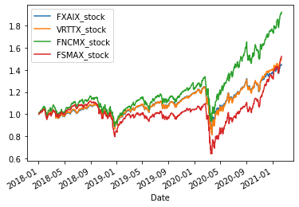
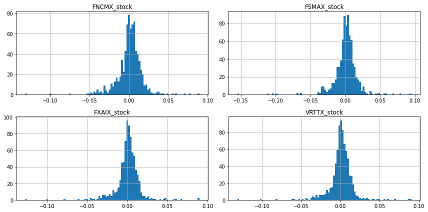
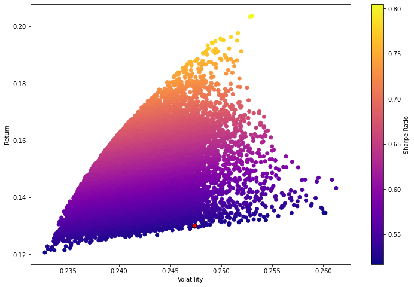
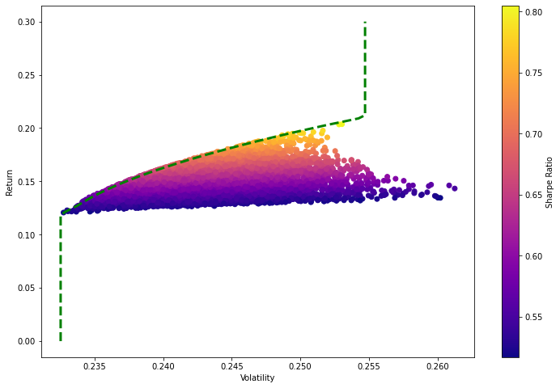

import numpy as np
import pandas as pd
import matplotlib.pyplot as plt
%matplotlib inlineThis post includes code and notes from python for finance and trading algorithms udemy course and python for finance and trading algorithms udemy course notebooks.
df = pd.read_csv('https://stocks-snp-500.herokuapp.com/stocks/index_stocks_table.csv?_size=max')
df.head()
df['Date'] = pd.to_datetime(df.Date)
df.index = pd.to_datetime(df.Date)
df2 = df.drop('Date', axis=1)
df3 = df2.drop('rowid', axis=1)
df3 = df3.drop('Russell_2000_stock', axis=1)
df3 = df3.drop('SP500_stock', axis=1)
df3
stocks = df3# start = pd.to_datetime('2018-01-01')
# end = pd.to_datetime('today')# import pandas as pd
# import pandas_datareader.data as web
# import datetime
# MSFT_stock = web.DataReader('MSFT', 'yahoo', start, end)
# MSFT_stock.head()
# ZOOM_stock = web.DataReader('ZM', 'yahoo', start, end)
# ZOOM_stock.head()
# aapl_stock = web.DataReader('aapl', 'yahoo', start, end)
# aapl_stock.head()
# stock_df = pd.concat([df3, aapl_stock['Close'],ZOOM_stock['Close'],MSFT_stock['Close']],axis=1)
# stock_df.columns = ['snp','aapl_stock','ZOOM_stock','MSFT_stock']
# stock_df# stocks = pd.concat([df3, aapl,cisco,amzn],axis=1)
# stocks.columns = ['snp','aapl','cisco','amzn']# stock_df# stocks = stock_dfmean_daily_ret = stocks.pct_change(1).mean()
mean_daily_retFXAIX_stock 0.000580
VRTTX_stock 0.000626
FNCMX_stock 0.000963
FSMAX_stock 0.000677
dtype: float64stocks.pct_change(1).corr()| FXAIX_stock | VRTTX_stock | FNCMX_stock | FSMAX_stock | |
|---|---|---|---|---|
| FXAIX_stock | 1.000000 | 0.996178 | 0.950284 | 0.926342 |
| VRTTX_stock | 0.996178 | 1.000000 | 0.950949 | 0.944306 |
| FNCMX_stock | 0.950284 | 0.950949 | 1.000000 | 0.891515 |
| FSMAX_stock | 0.926342 | 0.944306 | 0.891515 | 1.000000 |
Simulating Thousands of Possible Allocations
stocks.head()| FXAIX_stock | VRTTX_stock | FNCMX_stock | FSMAX_stock | |
|---|---|---|---|---|
| Date | ||||
| 2018-01-02 | 94.230003 | 238.889999 | 91.989998 | 62.529999 |
| 2018-01-03 | 94.830002 | 240.289993 | 92.760002 | 62.740002 |
| 2018-01-04 | 95.230003 | 241.199997 | 92.930000 | 62.849998 |
| 2018-01-05 | 95.900002 | 242.750000 | 93.699997 | 63.090000 |
| 2018-01-08 | 96.059998 | 243.199997 | 93.970001 | 63.270000 |
stock_normed = stocks/stocks.iloc[0]
stock_normed.plot()<AxesSubplot:xlabel='Date'>
stock_daily_ret = stocks.pct_change(1)
stock_daily_ret.head()| FXAIX_stock | VRTTX_stock | FNCMX_stock | FSMAX_stock | |
|---|---|---|---|---|
| Date | ||||
| 2018-01-02 | NaN | NaN | NaN | NaN |
| 2018-01-03 | 0.006367 | 0.005860 | 0.008371 | 0.003358 |
| 2018-01-04 | 0.004218 | 0.003787 | 0.001833 | 0.001753 |
| 2018-01-05 | 0.007036 | 0.006426 | 0.008286 | 0.003819 |
| 2018-01-08 | 0.001668 | 0.001854 | 0.002882 | 0.002853 |
Log Returns vs Arithmetic Returns
We will now switch over to using log returns instead of arithmetic returns, for many of our use cases they are almost the same,but most technical analyses require detrending/normalizing the time series and using log returns is a nice way to do that. Log returns are convenient to work with in many of the algorithms we will encounter.
For a full analysis of why we use log returns, check this great article.
log_ret = np.log(stocks/stocks.shift(1))
log_ret.head()| FXAIX_stock | VRTTX_stock | FNCMX_stock | FSMAX_stock | |
|---|---|---|---|---|
| Date | ||||
| 2018-01-02 | NaN | NaN | NaN | NaN |
| 2018-01-03 | 0.006347 | 0.005843 | 0.008336 | 0.003353 |
| 2018-01-04 | 0.004209 | 0.003780 | 0.001831 | 0.001752 |
| 2018-01-05 | 0.007011 | 0.006406 | 0.008252 | 0.003811 |
| 2018-01-08 | 0.001667 | 0.001852 | 0.002877 | 0.002849 |
log_ret.hist(bins=100,figsize=(12,6));
plt.tight_layout()
log_ret.describe().transpose()| count | mean | std | min | 25% | 50% | 75% | max | |
|---|---|---|---|---|---|---|---|---|
| FXAIX_stock | 784.0 | 0.000474 | 0.014648 | -0.127150 | -0.003955 | 0.001085 | 0.006955 | 0.089894 |
| VRTTX_stock | 784.0 | 0.000517 | 0.014807 | -0.131282 | -0.004037 | 0.001219 | 0.007279 | 0.090501 |
| FNCMX_stock | 784.0 | 0.000835 | 0.016046 | -0.131396 | -0.004628 | 0.001768 | 0.008337 | 0.089514 |
| FSMAX_stock | 784.0 | 0.000537 | 0.016836 | -0.154994 | -0.004773 | 0.001653 | 0.008149 | 0.095016 |
log_ret.mean() * 252FXAIX_stock 0.119352
VRTTX_stock 0.130180
FNCMX_stock 0.210329
FSMAX_stock 0.135276
dtype: float64# Compute pairwise covariance of columns
log_ret.cov()| FXAIX_stock | VRTTX_stock | FNCMX_stock | FSMAX_stock | |
|---|---|---|---|---|
| FXAIX_stock | 0.000215 | 0.000216 | 0.000223 | 0.000229 |
| VRTTX_stock | 0.000216 | 0.000219 | 0.000226 | 0.000236 |
| FNCMX_stock | 0.000223 | 0.000226 | 0.000257 | 0.000241 |
| FSMAX_stock | 0.000229 | 0.000236 | 0.000241 | 0.000283 |
log_ret.cov()*252 # multiply by days| FXAIX_stock | VRTTX_stock | FNCMX_stock | FSMAX_stock | |
|---|---|---|---|---|
| FXAIX_stock | 0.054072 | 0.054451 | 0.056310 | 0.057654 |
| VRTTX_stock | 0.054451 | 0.055251 | 0.056959 | 0.059382 |
| FNCMX_stock | 0.056310 | 0.056959 | 0.064882 | 0.060762 |
| FSMAX_stock | 0.057654 | 0.059382 | 0.060762 | 0.071430 |
Single Run for Some Random Allocation
# Set seed (optional)
np.random.seed(101)
# Stock Columns
print('Stocks')
print(stocks.columns)
print('\n')
# Create Random Weights
print('Creating Random Weights')
weights = np.array(np.random.random(4))
print(weights)
print('\n')
# Rebalance Weights
print('Rebalance to sum to 1.0')
weights = weights / np.sum(weights)
print(weights)
print('\n')
# Expected Return
print('Expected Portfolio Return')
exp_ret = np.sum(log_ret.mean() * weights) *252
print(exp_ret)
print('\n')
# Expected Variance
print('Expected Volatility')
exp_vol = np.sqrt(np.dot(weights.T, np.dot(log_ret.cov() * 252, weights)))
print(exp_vol)
print('\n')
# Sharpe Ratio
SR = exp_ret/exp_vol
print('Sharpe Ratio')
print(SR)Stocks
Index(['FXAIX_stock', 'VRTTX_stock', 'FNCMX_stock', 'FSMAX_stock'], dtype='object')
Creating Random Weights
[0.51639863 0.57066759 0.02847423 0.17152166]
Rebalance to sum to 1.0
[0.40122278 0.44338777 0.02212343 0.13326603]
Expected Portfolio Return
0.12828800153609307
Expected Volatility
0.23642865366590426
Sharpe Ratio
0.5426076727458592num_ports = 15000
all_weights = np.zeros((num_ports,len(stocks.columns)))
ret_arr = np.zeros(num_ports)
vol_arr = np.zeros(num_ports)
sharpe_arr = np.zeros(num_ports)
for ind in range(num_ports):
# Create Random Weights
weights = np.array(np.random.random(4))
# Rebalance Weights
weights = weights / np.sum(weights)
# Save Weights
all_weights[ind,:] = weights
# Expected Return
ret_arr[ind] = np.sum((log_ret.mean() * weights) *252)
# Expected Variance
vol_arr[ind] = np.sqrt(np.dot(weights.T, np.dot(log_ret.cov() * 252, weights)))
# Sharpe Ratio
sharpe_arr[ind] = ret_arr[ind]/vol_arr[ind]sharpe_arr.max()0.8049153800614341sharpe_arr.argmax()9077all_weights[1419,:]array([0.26188068, 0.20759516, 0.00110226, 0.5294219 ])max_sr_ret = ret_arr[1419]
max_sr_vol = vol_arr[1419]Plotting the data
plt.figure(figsize=(12,8))
plt.scatter(vol_arr,ret_arr,c=sharpe_arr,cmap='plasma')
plt.colorbar(label='Sharpe Ratio')
plt.xlabel('Volatility')
plt.ylabel('Return')
# Add red dot for max SR
plt.scatter(max_sr_vol,max_sr_ret,c='red',s=50,edgecolors='black')<matplotlib.collections.PathCollection at 0x7f3f7467de50>
def get_ret_vol_sr(weights):
"""
Takes in weights, returns array or return,volatility, sharpe ratio
"""
weights = np.array(weights)
ret = np.sum(log_ret.mean() * weights) * 252
vol = np.sqrt(np.dot(weights.T, np.dot(log_ret.cov() * 252, weights)))
sr = ret/vol
return np.array([ret,vol,sr])from scipy.optimize import minimizeTo fully understand all the parameters, check out: https://docs.scipy.org/doc/scipy/reference/generated/scipy.optimize.minimize.html
#help(minimize)Optimization works as a minimization function, since we actually want to maximize the Sharpe Ratio, we will need to turn it negative so we can minimize the negative sharpe (same as maximizing the postive sharpe)
def neg_sharpe(weights):
return get_ret_vol_sr(weights)[2] * -1# Contraints
def check_sum(weights):
'''
Returns 0 if sum of weights is 1.0
'''
return np.sum(weights) - 1# By convention of minimize function it should be a function that returns zero for conditions
cons = ({'type':'eq','fun': check_sum})# 0-1 bounds for each weight
bounds = ((0, 1), (0, 1), (0, 1), (0, 1))# Initial Guess (equal distribution)
init_guess = [0.25,0.25,0.25,0.25]# Sequential Least SQuares Programming (SLSQP).
opt_results = minimize(neg_sharpe,init_guess,method='SLSQP',bounds=bounds,constraints=cons)opt_results fun: -0.8257252387825378
jac: array([ 2.48069711e-01, 2.13815376e-01, -7.45058060e-09, 2.42212258e-01])
message: 'Optimization terminated successfully'
nfev: 15
nit: 3
njev: 3
status: 0
success: True
x: array([0.00000000e+00, 2.77555756e-16, 1.00000000e+00, 0.00000000e+00])opt_results.xarray([0.00000000e+00, 2.77555756e-16, 1.00000000e+00, 0.00000000e+00])get_ret_vol_sr(opt_results.x)array([0.21032899, 0.25472031, 0.82572524])All Optimal Portfolios (Efficient Frontier)
Efficient Frontier http://www.investopedia.com/terms/e/efficientfrontier
# Our returns go from 0 to somewhere along 0.3
# Create a linspace number of points to calculate x on
frontier_y = np.linspace(0,0.3,100) # Change 100 to a lower number for slower computers!def minimize_volatility(weights):
return get_ret_vol_sr(weights)[1] frontier_volatility = []
for possible_return in frontier_y:
# function for return
cons = ({'type':'eq','fun': check_sum},
{'type':'eq','fun': lambda w: get_ret_vol_sr(w)[0] - possible_return})
result = minimize(minimize_volatility,init_guess,method='SLSQP',bounds=bounds,constraints=cons)
frontier_volatility.append(result['fun'])plt.figure(figsize=(12,8))
plt.scatter(vol_arr,ret_arr,c=sharpe_arr,cmap='plasma')
plt.colorbar(label='Sharpe Ratio')
plt.xlabel('Volatility')
plt.ylabel('Return')
# Add frontier line
plt.plot(frontier_volatility,frontier_y,'g--',linewidth=3)